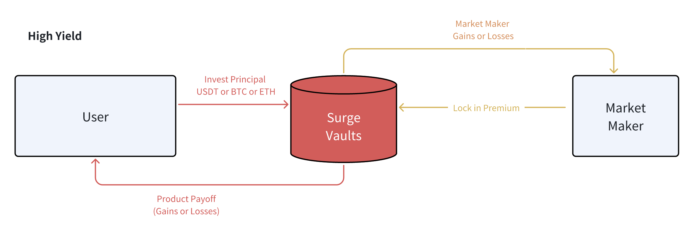

Définir Votre Préférence de Risque
Quel niveau de risque souhaitez-vous prendre ?
Protocole Earn
La catégorie de protocole 'Earn' est conçue pour les déposants averses au risque cherchant la protection maximale de leur capital. Les coffres Earn stakeront le capital déposé des utilisateurs dans des protocoles à rendement sécurisé (par exemple, AAVE) pour générer un niveau de base d'intérêt**, et utiliseront une partie de ce revenu garanti pour financer la prime d'option avec des teneurs de marché pour un potentiel de hausse.
Le résultat final sera maximiser la protection contre les baisses, tout en maintenant un certain potentiel de hausse si le marché évolue favorablement dans la direction de l'utilisateur.
Cela dit, veuillez noter qu'un composant de conception critique exige que les rendements passifs offerts par les protocoles de staking éligibles soient significativement supérieurs au paiement dans le pire des cas du produit, afin de financer correctement la prime d'option pour générer le retour potentiel. Ainsi, si l'utilisateur détient de l'ETH au lieu de l'USDT, il/elle devra convertir l'ETH en stETH dans un protocole de staking liquide tel que Lido, avant de verrouiller le stETH dans les coffres du protocole pour bénéficier de l'accumulation de rendement supplémentaire.


Protocole Surge
Pour les utilisateurs ayant une tolérance au risque-rendement plus élevée, le protocole propose également des structures à rendement plus élevé avec un 'ante' de capital initial. Les protocoles Surge sont uniquement destinés aux utilisateurs agressifs désireux d'obtenir des rendements substantiellement élevés en échange de pertes en capital.

Avec ces produits basés sur Surge, le coffre du protocole verrouillera à la fois le principal de l'utilisateur ainsi que la prime des teneurs de marché au début de la transaction, analogiquement à un 'ante de poker'**. Les positions de capital verrouillées ne seront pas restakées dans d'autres protocoles, et elles servent d'ante engagé contre le paiement final.
Prenons le produit Surge-Rangebound comme exemple. Si le prix de l'actif sous-jacent reste strictement dans les barrières jusqu'à l'échéance finale, l'utilisateur recevra un retour exponentiellement plus élevé que ce qu'il aurait eu sous la version Earn. Cependant, si l'inverse se produit, la structure sera résiliée prématurément, le principal verrouillé étant transféré au teneur de marché en tant que 'gagnant' de cette stratégie.
Encore une fois, ces produits sont destinés aux utilisateurs ayant une conviction de marché très forte, et qui souhaitent mettre cette confiance à l'épreuve dans l'espoir de gagner un taux de retour très élevé en échange de pertes en capital.
PSA : Note Spéciale sur les Produits Rangebound
Illustration Picturale de Comment Fonctionne le Rangebound en Pratique
Bien que simple en théorie, le produit Rangebound présente en réalité certains défis de conception, notamment en ce qui concerne la compatibilité on-chain DeFi :
- Le produit fait référence à une série de prix historiques, plutôt qu'à un contrôle 'à un moment donné' à l'expiration.
- Le produit peut être 'knocké-out' si les barrières de prix sont franchies.
Le produit peut être knocké-out à tout moment, mais il est techniquement infaisable de rafraîchir continuellement les références de prix on-chain tout au long de la journée.
- Par extension, les vérifications de plage sont "rétrospectives" par nécessité.
L'équipe a fait les compromis de conception suivants face aux défis précédents :
Vérifications de Plage Quotidiennes :
- Dans l'intérêt des frais de gaz et du TPS on-chain, notre produit Rangebound ne fera qu'une vérification de prix quotidienne (à 16h OTC+8) pour déterminer si le produit a été éliminé au cours des 24 dernières heures.
- Les produits éliminés se termineront sans plus d'exposition à l'avenir.
Cycles de Produit Quotidiens :
- Conformément aux vérifications de plage quotidiennes et à la cadence de règlement, notre cycle d'observation commencera toujours à partir de la prochaine période de 16h (OTC+8).
- Néanmoins, les utilisateurs sont libres de s'abonner et d'acheter un produit Rangebound à tout moment, et leur rendement Base+ commencera à s'accumuler immédiatement.
Résiliation Anticipée vs Retrait Final :
- Les produits Rangebound qui sont 'éliminés' sont effectivement 'game over' ; cependant, les dépôts des utilisateurs restent stakés dans Aave, et nous devons attendre jusqu'à la maturité finale pour que les utilisateurs puissent retirer le principal dans notre itération actuelle.